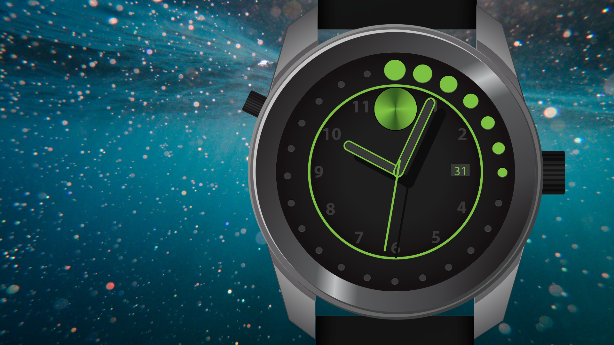
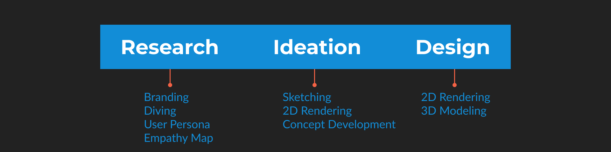
In this project we are working with an established brand. Movado is known for its modern aesthetic and their signature metallic dot at 12 o'clock.
Their Bold collection of watches specifically is meant to modernize their style even further while being more affordable. Bold watches are typically more colorful and use plastic material to lower the cost. While cost is a challenge, their extra color is something I believe we can use to our advantage when diving.
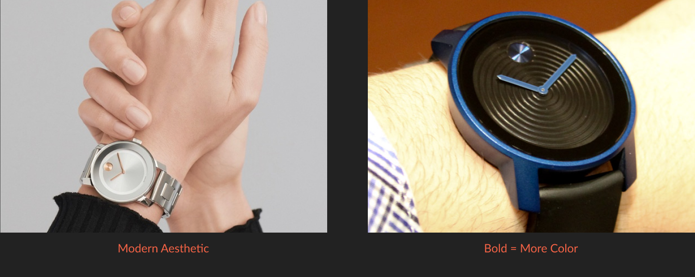
Diver watches are used to keep track of elapsed time within one hour from the point of entering the water. The diver can then look at the bezel on the face of the watch to see how much time has passed. The goal should always be to read the bezel easily without having to do any mental calculations.
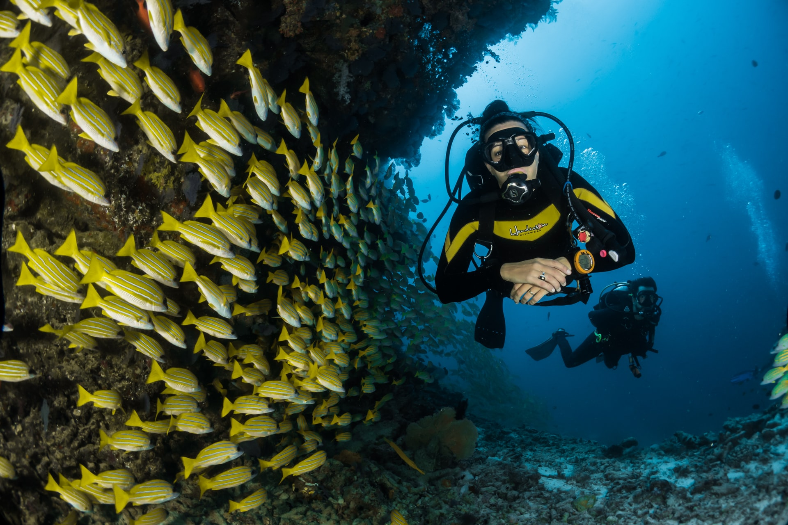
There are many outside factors that need to be considered when designing for the users experience of reading a watch underwater:
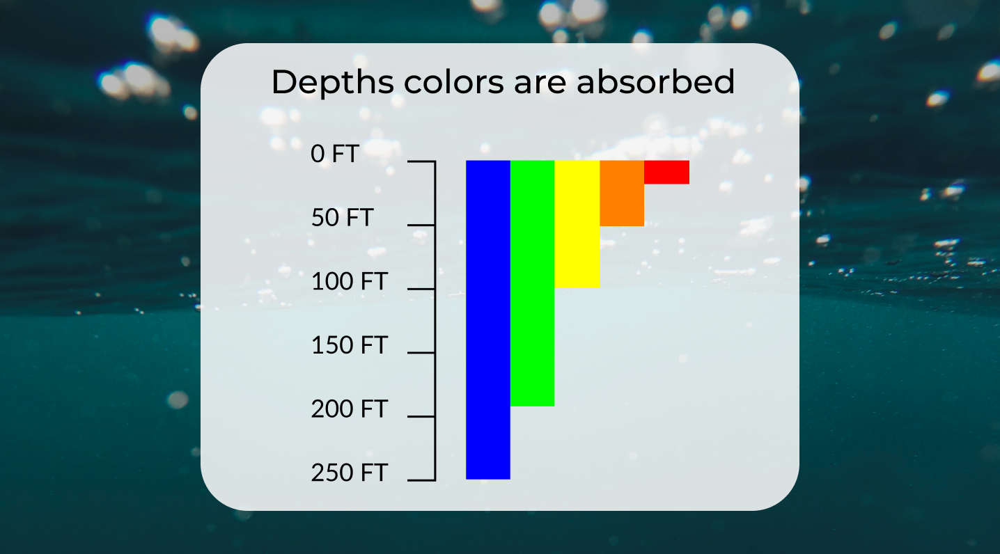
These are approximate numbers as water clarity will also affect what colors are still visible, but we can start to form ideas on which colors to use when combined with the following information from DiveTraining Magazine:
Even though the watch is likely to only be a fashion element. This info means the average user who does go diving will be in the range of 30-130 feet. Leaving blue, green, yellow, and orange as our color options.
Now that I understand what my user will be doing, its time to get a better sense of who my user is. Movado has instructed that their target audience is male and between the ages of 25-35.
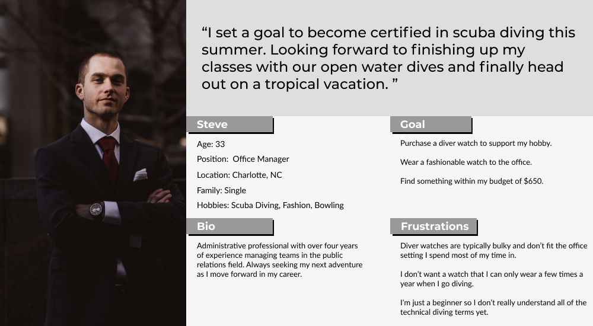
Before jumping into different ideas for the design, I want to build an empathy map to better understand and prioritize my users needs. Acting as a source to revisit throughout my design process.
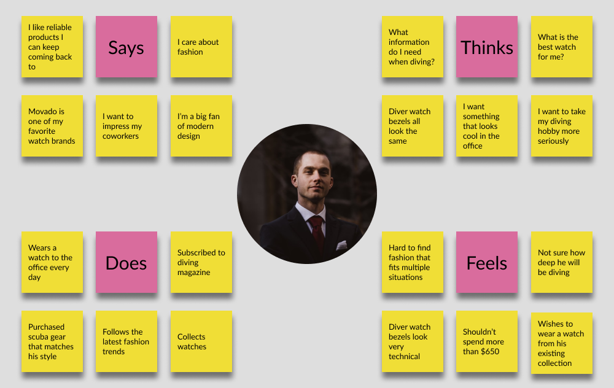
My first set of ideation sketches are to try and understand the shape of the case. Exploring how to take a traditional divers watch and give it a more modern feel.
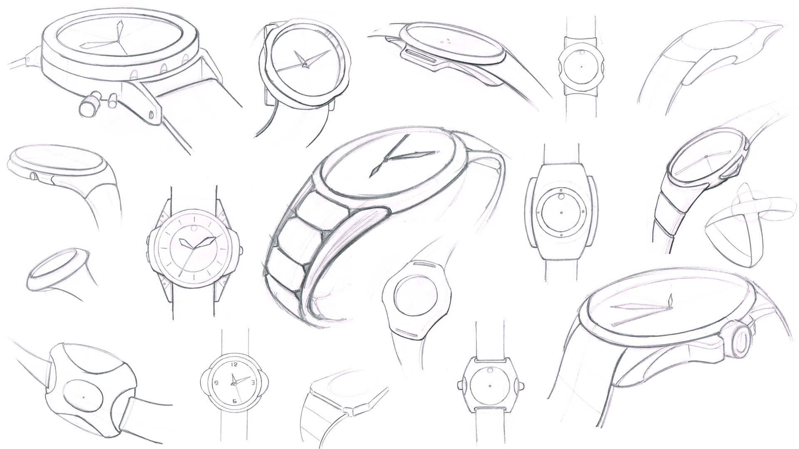
Next I focused on the hands, which are one of the main user interface elements of the watch. Here I am exploring shapes that will allow me to add extra color inside of them.
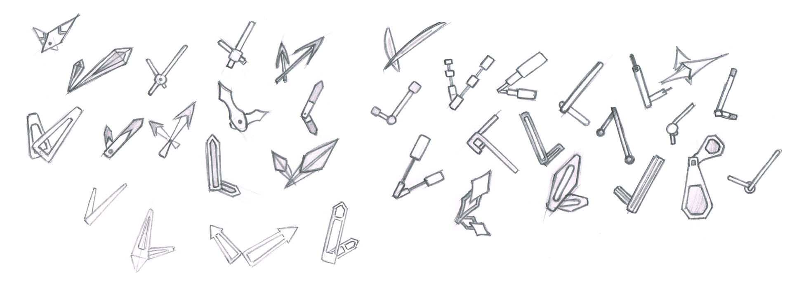
Moving on to more refined concepts in Illustrator. Concept A attempts to maintain a more traditional looking bezel within the Movado branding.
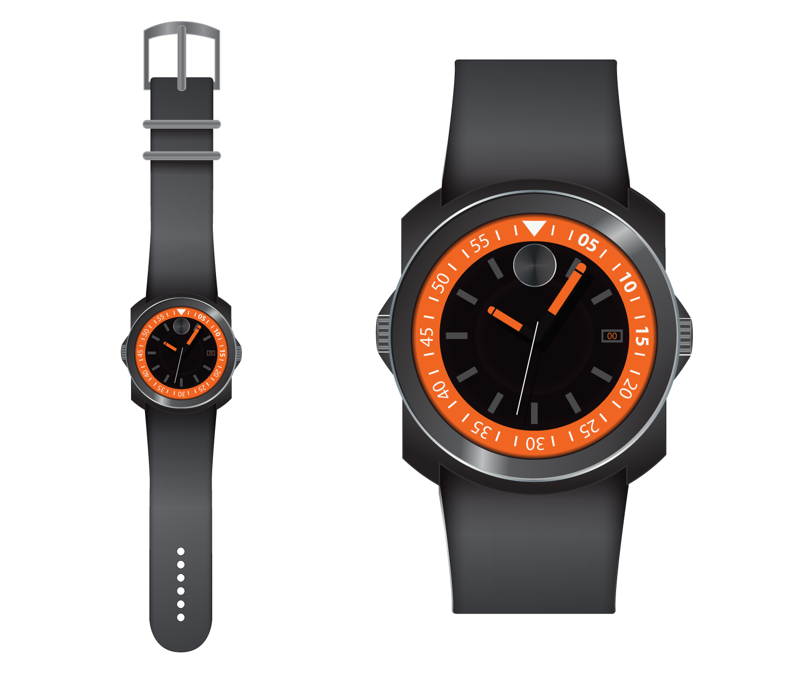
Concept B is my attempt to create something unique with the core design goals of this project, modern with color. This is the result of asking myself how can we read time without numbers? Through shape and color.
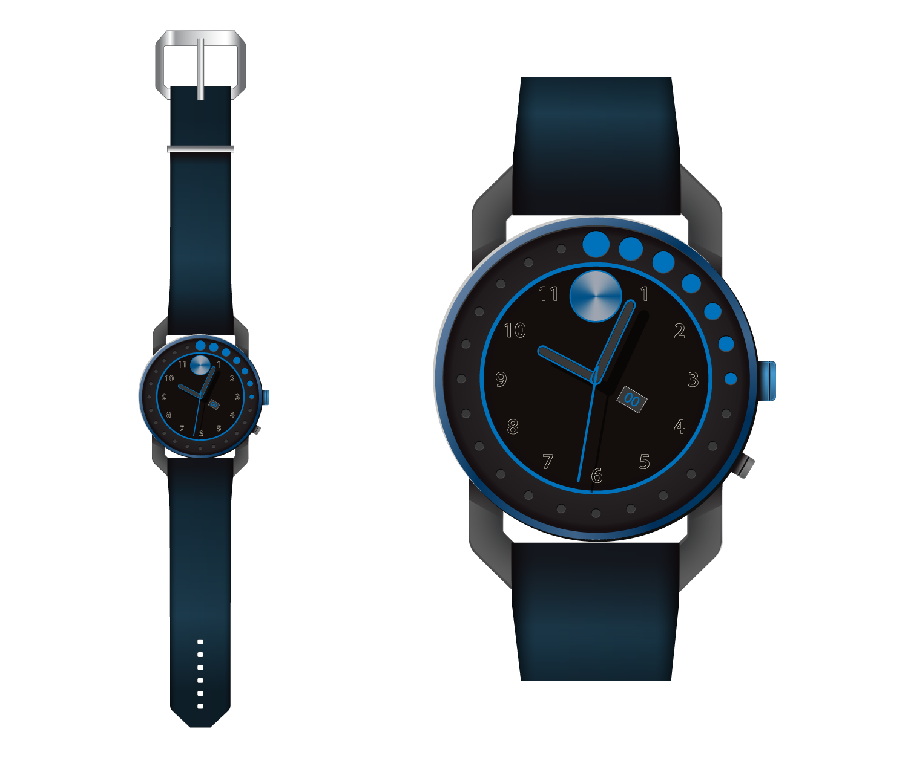
Concept C fits somewhere between A and B in terms of being more traditional and also unique. This is a more modern take on the rotating bezel.
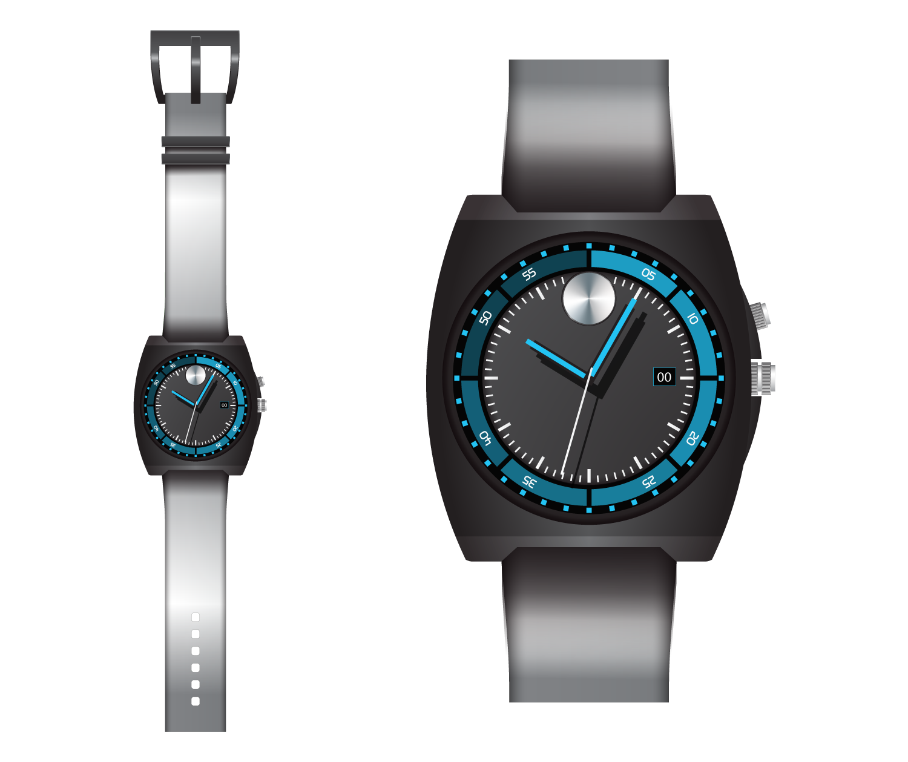
The next step in development was to clean up the dials and bezel. Going back to my research, there were 2 key points learned about the experience our user will be going through:
With these goals in mind I refined the designs as seen below.
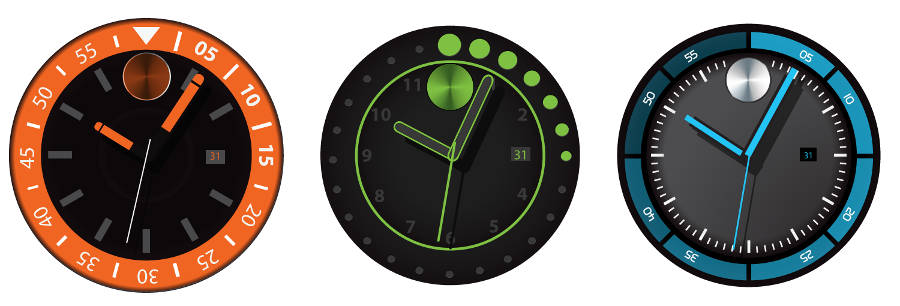
The final design for our Movado Bold Diver watch takes advantage of our modern brand, utilizing shape change with the help of color to signify time. While creating a truly unqiue look that will stand out from the competition and grab the attention of our target users.
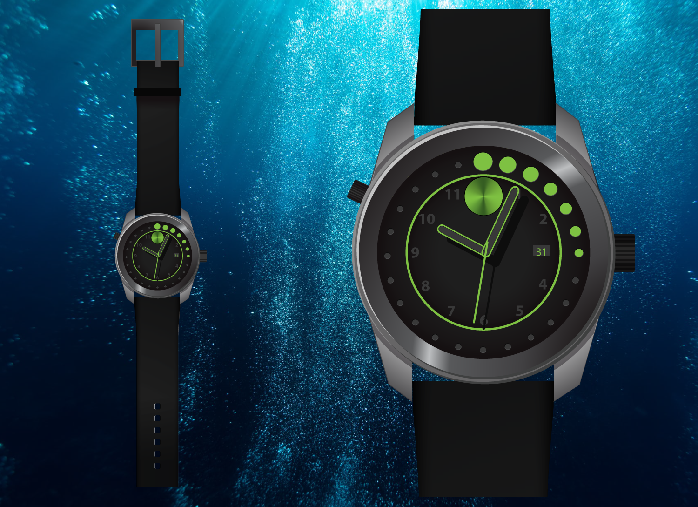
The main feature of a divers watch is its rotating bezel. As seen below, you can look at this bezel quickly and immediately understand the amount of time that has elapsed as the shapes move along. The shape gets larger as you get closer to the 1 hour mark of entering the water.
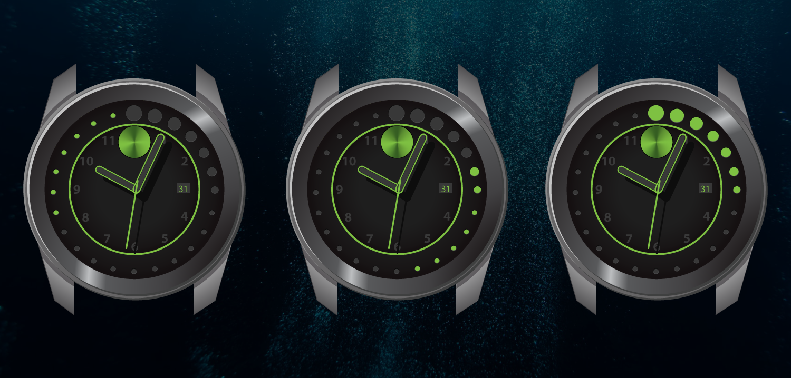
Creating our entire finished product in SolidWorks, including an exploded view to get a better understanding of how the mechanism behind this unique bezel works.
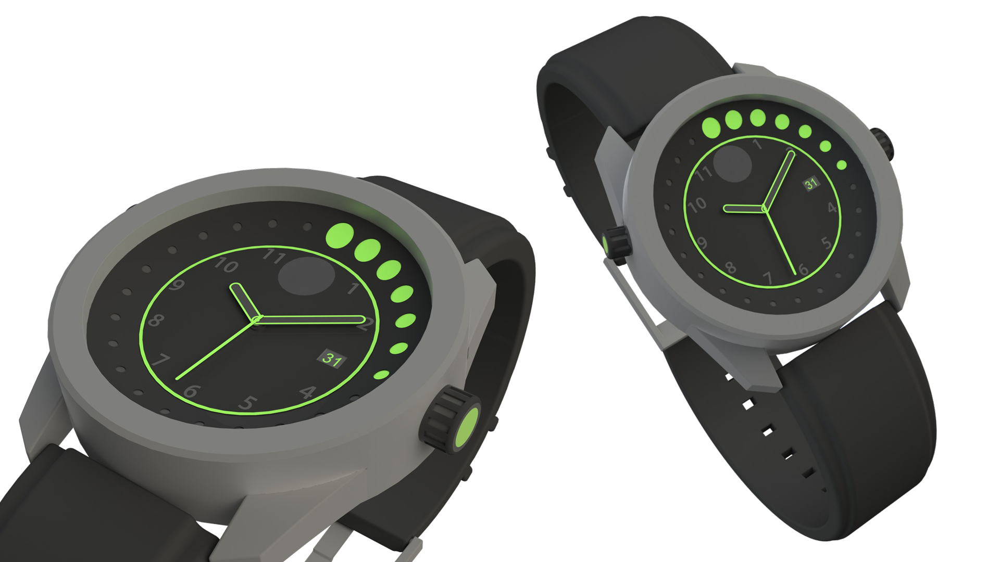
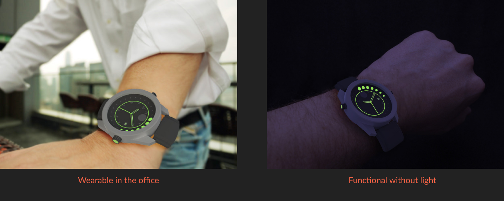
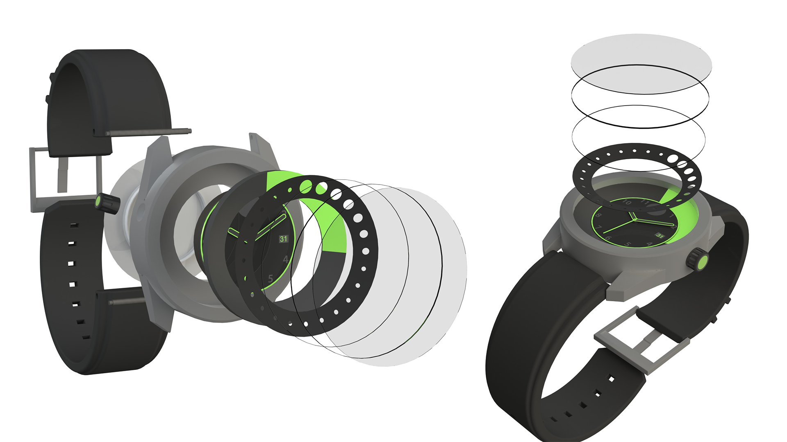
This was an exciting project where I became completely immersed in my users experience. Learning more about diving than I ever imagined. One thing that I quickly learned was that these days diver watches are no longer needed for their function. Diving equipment is so advanced that we can use computers to keep track of this information. However it did not feel right to leave behind any users who actually do go diving. I would never use a product that pretends to do a function in the wrong way. I wanted the challenge of making this diver watch more than just a fashion statement.